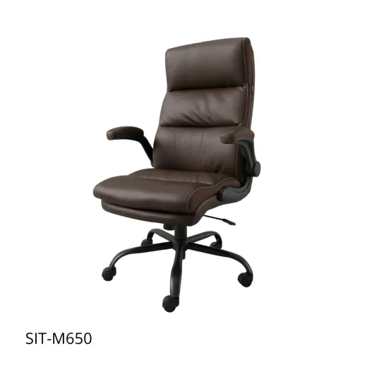

SIT
Silla SIT de 2 Asientos con Cojín para sala de Espera con brazo. Color Gris y Negro. SIT-VIST2C
L 3,620.46
En iOffice
Precio en cada tienda
| Tienda | Precio | Antes | Disponibilidad | |
|---|---|---|---|---|
| iOffice | L 3,620.46 | Disponible | Ver en tienda › |
Precios referenciales tomados de cada tienda el 28 de noviembre de 2026. El precio válido es el que muestra la tienda al comprar.
Historial de precio
Lo seguimos desde el 16 de noviembre. Precio más bajo registrado: L 3,620.46 en iOffice (16 de noviembre), igual que hoy. El precio no ha cambiado en ese tiempo.
Descripción
Ocasiones de uso: Perfecto para aeropuerto, vestíbulo, hospital, peluquería, banco, estación, salón de belleza, sala de espera de oficina.
Diseño ergonómico: nuestro respaldo de silla de espera de recepción diseñado con malla curva para ayudar a los huéspedes a promover una posición sentada cómoda, el diseño de reposabrazos te permite apoyar mejor tus brazos mientras estás sentado.
La capacidad máxima de peso para cada silla es de 330 libras, lo que puede proporcionar suficiente espacio para acomodar a 2 personas grandes.
¡Eleva el confort en tu sala de espera con nuestra silla individual cromada con Brazo! Elegancia y comodidad en un solo producto.
Otros sillas y escritorios SIT
 Silla SIT Ejecutiva, respaldo de malla, soporte lumbar ajustable, brazos fijos. Peso: 250 Lbs.SIT-M750 NegroL 3,214.68En iOffice
Silla SIT Ejecutiva, respaldo de malla, soporte lumbar ajustable, brazos fijos. Peso: 250 Lbs.SIT-M750 NegroL 3,214.68En iOffice- Silla SIT Ejecutiva, respaldo de malla, soporte lumbar ajustable, brazos fijos. Peso: 250 Lbs.SIT-M750 GrisL 3,214.68En iOffice
 Silla SIT Ejecutiva, Respaldo alto, cojín lumbar, altura ajustable. Color Negro. Peso: 250Lbs. SIT-M305L 3,208.5En iOffice
Silla SIT Ejecutiva, Respaldo alto, cojín lumbar, altura ajustable. Color Negro. Peso: 250Lbs. SIT-M305L 3,208.5En iOffice Silla SIT Ejecutiva de respaldo alto mecanismo base y Apoyabrazos cromados, Color marrón. Peso: 300Lbs. SIT-M700L 4,036.5En iOffice
Silla SIT Ejecutiva de respaldo alto mecanismo base y Apoyabrazos cromados, Color marrón. Peso: 300Lbs. SIT-M700L 4,036.5En iOffice
Silla SIT ejecutiva con respaldo alto, mecanismo, reposabrazos, marrón piel sintética. SIT-M650L 4,083.68En iOffice Silla SIT Ejecutiva, respaldo alto, ajustable, base cromada. Color Negro. Peso: 250Lbs. SIT-M315 Gris y azulL 4,252.09En iOffice
Silla SIT Ejecutiva, respaldo alto, ajustable, base cromada. Color Negro. Peso: 250Lbs. SIT-M315 Gris y azulL 4,252.09En iOffice Silla SIT Ejecutiva, malla negra, inclinación flexible, ruedas de goma, apoyo lumbar. Peso: 250 Lbs. SIT-M350 NegroL 2,929.54En iOffice
Silla SIT Ejecutiva, malla negra, inclinación flexible, ruedas de goma, apoyo lumbar. Peso: 250 Lbs. SIT-M350 NegroL 2,929.54En iOffice Silla SIT de espera, 2 asientos con brazos, Cromado, Color gris. SIT-VIST2L 2,894.79En iOffice
Silla SIT de espera, 2 asientos con brazos, Cromado, Color gris. SIT-VIST2L 2,894.79En iOffice